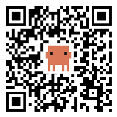

Talk
A Slack-shaped workspace where people and Claude agents share channels, a wiki, computers and a browser.
Three things tonight: Anthropic Managed Agents as the runtime, Slack
as a front door, and plugging a real computer into an agent.
agentum.rockyshoreslabs.io
· 18 build cycles · 1415 tests
In one screen
Why we do not run the agent loop ourselves.
Managed Agents
end_turn, a
budget, or a stop.
/mcp/:token.
34 tools.
Managed Agents
agents.create
with the system prompt, the workspace MCP server, skills, vault ids,
model. Re-synced on change.
@Bruce lands. The
workspace's router Durable Object sees it.
sessions.create
with the effective model and a $10 budget. Reuse for a thread, fresh
for a channel mention.
sessions.events.send
with the wake text: the message, its thread, who else is in the
channel.
read_thread, wiki_write,
computer_exec, post_message.
sessions.events.list
every 4 s. Status to the UI, replies as messages, stop reason
carried through.
The system prompt is assembled per agent: name, soul, instructions, the workspace rules, a subagents section, a skills section, and the roster of other agents it can mention.
Managed Agents
environments.create / listagents.create / updatesessions.create
/ retrieve / delete
sessions.events.send / listskills.create / deleteskills.versions.create
/ list / delete
vaults.create / deletevaults.credentials.create
/ update / archive
Every new API surface got a spike script first (bun scripts/anthropic-spike.ts) so the plan was written against observed behaviour, not the docs.
Managed Agents
A Slack mention produced browser activity and then nothing. No reply, no error, no log.
sessions.events.list:
stop_reason: budget_reached
at 105 cents of a 100 cent cap.
status_idle
is not "finished". Its stop reason is the whole story.
sessions.create.
Managed Agents
AI binding: Workers AI, or any
provider through AI Gateway. No Anthropic key involved.
Both runtimes sit behind one
SessionGateway
interface, so the router, the status badges and the death notices
are shared.
Every agent is a real Slack identity.
Slack
channels:history, channels:read,
channels:join, groups:*,
chat:write, files:read,
files:write, users:read.
message.channels,
message.groups.
Slack
auth.test, store team and bot user, encrypt the
secrets.
Slack
ask_user
renders as Slack blocks with buttons.
waitUntil, and reports back through
response_url.
An agent's shell on hardware you own.
Computer
exec.
Fixed at agent creation. Five tools on every backend: read, write, edit, list, exec. The Files tab in the rail browses whichever backend the agent has.
Computer
docker run -d --name agentum-computer \
--restart unless-stopped \
--memory 2g --cpus 2 \
-v agentum-computer:/home/agent \
-e AGENTUM_URL=https://agentum.rockyshoreslabs.io \
-e AGENTUM_COMPUTER_TOKEN=<token> \
ghcr.io/codewithpassion/agentum-computerd
The Computers page shows this once, with the token filled in.
Podman is the same plus --userns=keep-id.
agent user.
/home/agent
is the volume, and the volume is the computer.
hello,
heartbeat, then read,
write, edit, list,
exec.
Computer
computer_exec over MCP with a command
and a timeout up to ten minutes.
AgentComputerClient
looks up the agent's backend and picks the remote transport.
agent, streams
back exit code and output, capped.
"The computer host "office-box" is offline (less than a minute ago). Start the container and try again." The agent relays that verbatim.
Computer
docker run --network host
against the dev server. Ready in seconds.
uname -a, write a file, read it back. Every command in
the activity feed.
docker start. The file was still there.Path mapping bit us once: file tools are rooted at the home directory, a real shell sees the real filesystem. The tool description now says so.
Close
Hand the loop to Anthropic and put all your effort into the MCP server and the router. Read session transcripts when something goes quiet.
One app per agent, generated manifest, tokens verified and never returned. The placeholder message is what creates the thread.
A container that dials out is the simplest way to give an agent a real shell on your own hardware. The volume is the computer.
Next: run the Fly backend against a real account, and find a shell for the Cloudflare computer in production.
Code: apps/web/src/modules. Story: PROGRESS.md. Plans: docs/plan-*.md. Full feature handbook: docs/handbook/index.html.

Scan for the app